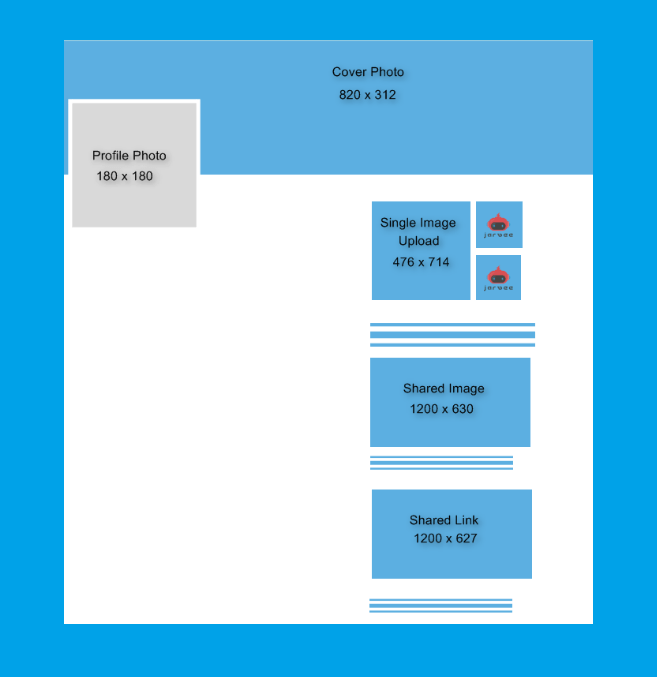
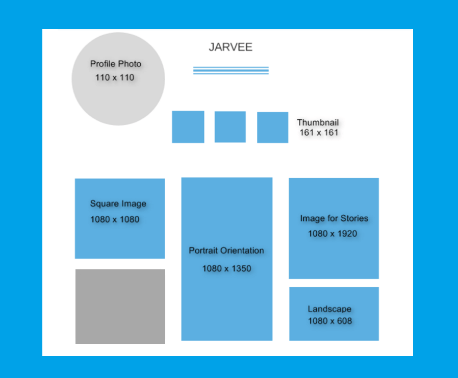
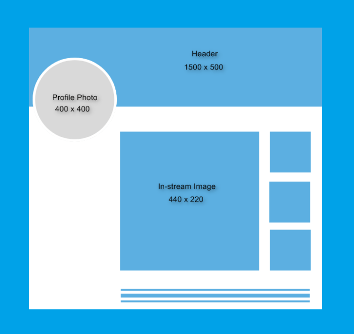
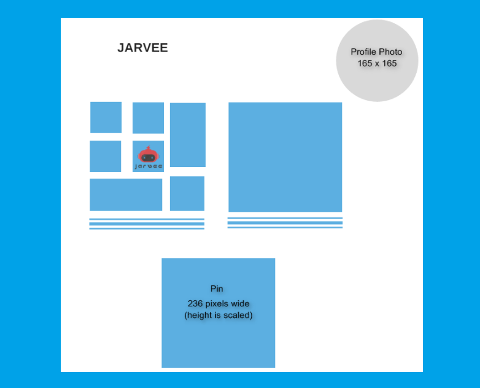
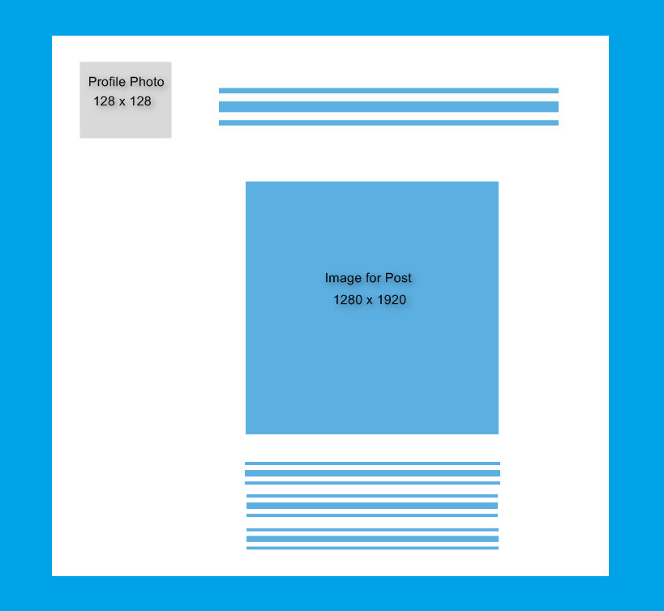

Knowing the best image size to use for your profile picture, cover photo, content and more across different social media networks is vital for your social media presence. Each social media platform has its own image requirement and if you are cross-promoting your brand or business on various social networks, it is best to use the recommended image size that is suitable for the respective platform.
Importance of using the best image size
As we have mentioned in our previous article, adding and knowing where to get free yet captivating images for your content is one of the factors to consider in achieving a highly engaging post, but having an eye-catching visual is not enough. You have to make sure that the image you use will not only look good on your Timeline but more importantly, it needs to be perfect when viewed in the News Feed.
Further to that, imagery does not stop on your content, it includes the profile picture and cover photo of your social media account. Hence, you also need to use the best image size for your page for stronger representation.
Profile Photo
This is you. The image you use for your profile photo will be seen on your page, when you publish your content, make a comment, in search results and much more. Therefore, make sure that you use a decent photo that best identifies yourself, brand and business.
Cover/Header Photo
This is the area on your page where you can make use of an image that advocates your brand and business. It should convey a concise message about what people can expect from your offerings at a quick glance. Thus, you should be creative in choosing the photo in addition to using the best image size for your Cover /Header Photo.
Best image size for top social media
Below is the list of popular social media along with the ideal image size you can use for the profile picture, cover photo and more.
When you think of social media, the first thing that comes to mind is Facebook. Thus, it is no surprise that it is the go to platform of online marketers, businesses and practically everybody on the planet. But before anything else, make sure that you have setup your page accordingly.

Profile Photo
- Upload an image that is 180 pixels wide and 180 pixels tall
- On a computer, it will display at 170 pixels wide and 170 pixels tall
- Will appear at 128 pixels wide and 128 pixels tall on smartphones
- Will show at 36 pixels wide and 36 pixels tall on majority of feature phones
Cover Photo
- Appears at 820 pixels wide and 312 pixels tall on a computer
- Displays at 640 pixels wide by 360 pixels tall on smartphones
- Image upload should be minimum of 399 pixels wide and 150 pixels tall
- Ideally, image should not exceed 100 KB
- Use image file format sRGB JPG, PNG (best for logo and image with text)
Single image upload on Timeline
- Upload at 476 pixels wide and 714 pixels tall
- For vertical image (or portrait), maximum ratio of 3:2
- For horizontal image (or landscape), it would be scaled to 476 pixels wide with aspect ratio of 3:2
Shared Image
This is the most often used image on Facebook. It will appear on your profile’s Timeline as well on other users news feed, so make sure you use the best image size to make your post stand out.
- The suggested image upload is 1200 pixels wide and 630 pixels tall
- Displayed image will appear at 470 pixels wide; scaled down to maximum ratio of 1:1
- While on page it will appear at 504 pixels wide; scaled down to maximum ratio of 1:1
Shared Link
- Suggested image upload size 1200 pixels wide and 627pixels tall
- Image thumbnail in feed will display at 476 pixels wide and 249 pixels tall
- Images will be scaled down to square images with minimum dimensions of 154 pixels wide x 154 pixels tall in feed and 116 pixels wide x 116 pixels tall on Page.
Instagram is the most popular social media platform in terms of sharing images. It used to only display square images but has since supported 2 other image orientations namely portrait (vertical) and landscape (horizontal) pictures.

Profile Photo
- 110 pixels wide and 110 pixels tall
- Maintain an aspect ratio of 1:1 (square image)
Square Image
- Best image size is 1080 pixels wide and 1080 pixels tall
- Maintain aspect ratio of 1:1
- Will display at a maximum of 600 pixels wide and 600 pixels tall
Vertical Image (Portrait orientation)
- Suggested image upload is 1080 pixels wide and 1350 pixels tall or aspect ratio of 5:4
- Image will display at 480 pixels wide and 600 pixels tall; On retina display, will show at or 920 pixels wide and 1200 pixels tall
Horizontal (Landscape orientation)
- Use an image that is 1080 pixels wide and 608 pixels tall or with aspect ratio of 16:9
- Will display at a maximum of 600 pixels wide and 337 pixels tall
Thumbnails
- These are the collection of images that you posted which people will see when they visit your page.
- Will display at 161 pixels wide and 161 pixels tall
- Non-square images will have white borders to maintain an aspect ratio of 1:1 (square image)
Image for Stories
Not long after Snapchat became a huge success, the widely recognized social media platform copied the concept and called their version Stories. And considering the number of heavy Instagram users all over the world, it was expected to slay the competition.
- Best image size is 1080 pixels wide and 1920 pixels tall or aspect ratio 16:9
Twitter is among the extensively used social media to date. It has approximately 328 million active users and 157 daily active users, thus a majority of businesses and personalities use this platform to promote and discuss their brands, projects and so on.

Profile Photo
- Should be 400 pixels wide and 400 pixels tall
- Image displays at 200 pixels wide and 200 pixels tall
- File format can be in JPG, GIF or PNG format
- File size should not exceed 2 MB
Header Photo
- Suggested image size is 1500 pixels wide and 500 pixels tall
- File format can be in JPG, GIF or PNG
- File size should not exceed 5 MB
In-stream Image
This is the image that you can attach to your tweets and fortunately, this no longer counts against the character limit like it previously did.
- Image should have an aspect ratio of 2:1
- Should be minimum of 440 pixels wide and 220 pixels tall
- Can attach 4 photos per tweet
- File size can be a maximum of 5 MB for images, 5 MB for GIFs and 15 MB for web
- File format can be JPG, GIF or PNG
- Does not support BMP or TIFF file formats
Another social media platform that focuses on image sharing is Pinterest. It is a great social tool for online entrepreneurs. You can easily create a specific board where you can showcase each of your products and so on.

Profile Photo
- Displays at 165 pixels wide and 165 pixels tall on your page
- Appears at 32 pixels wide and 32 pixels tall everywhere else on Pinterest
- Supported file formats are JPG and PNG
- Maximum image upload is 10 MB
Pin (the image you add to your Pinterest board is called Pin)
- Has width limit on image upload; none on height
- On board and main page, pins appear at 236 pixels wide and height is scaled
- Will appear at a minimum width 600 pixels wide (height is scaled) when pin is expanded
- Suggested image aspect ratio is 2:3 to 1:3.5
Thumbnails
- Displays at 222 pixels wide and 150 pixels tall for large thumbnail
- Displays at 55 pixels wide and 55 pixels tall for the small thumbnail
Tumblr
Tumblr may not be as widely held as Facebook, Instagram or Twitter but it is the preferred social media platform of bloggers.

Profile Photo
- Displays at 128 pixels wide and 128 pixels tall (minimum)
- Supported file formats are JPG, GIF, PNG or BMP
Image for Post
- Should be 1280 pixels wide and 1920 pixels tall
- Shows at 500 pixels wide and 750 pixels tall when viewed on feed
- Image should not be more than 10 MB
- Supports animated GIFs but should not exceed 3 MB
- Animated GIFs should be maximum of 540 pixels wide
LinkedIn is a serious social media platform. This is where professionals, job seekers, companies and the likes connect. Hence, your personal or company page needs to be well-thought-of.
Profile Photo
- Ideal is 552 pixels wide by 368 pixels tall
- Will show in feed at aspect ratio of 3:2 and 522 pixels wide
Leave a Reply